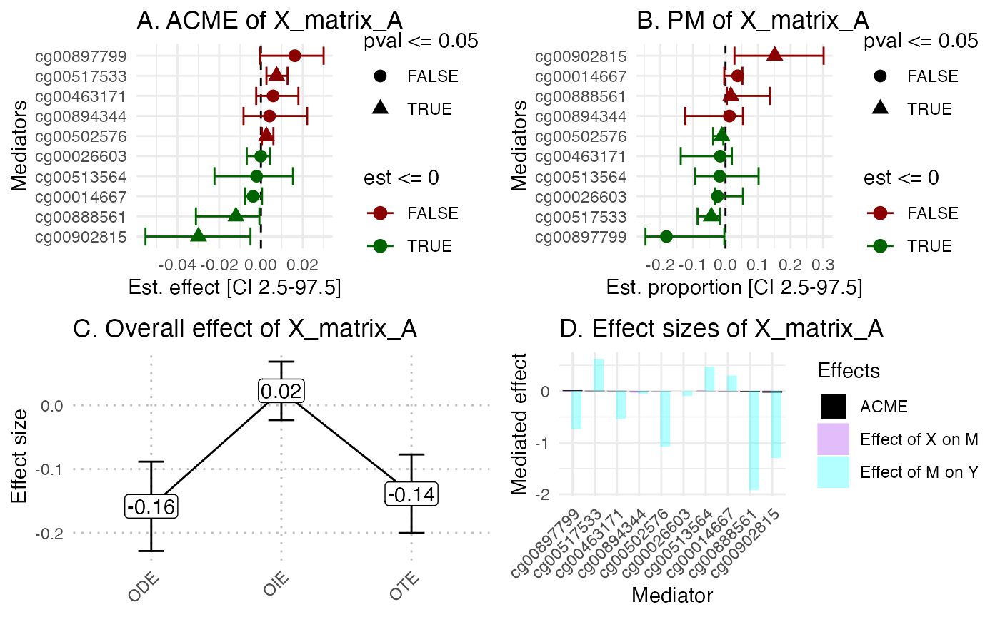
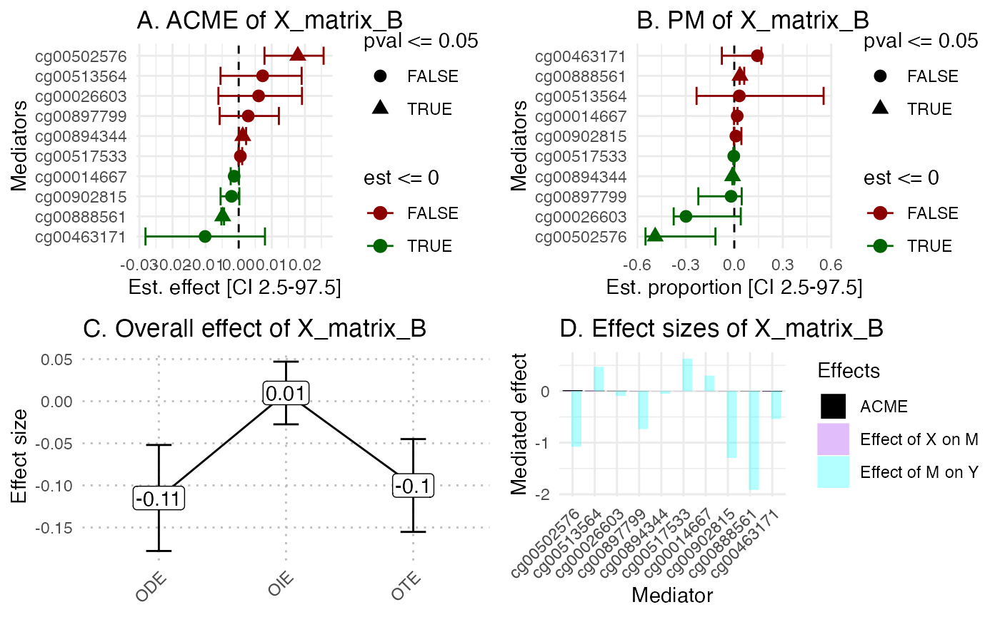
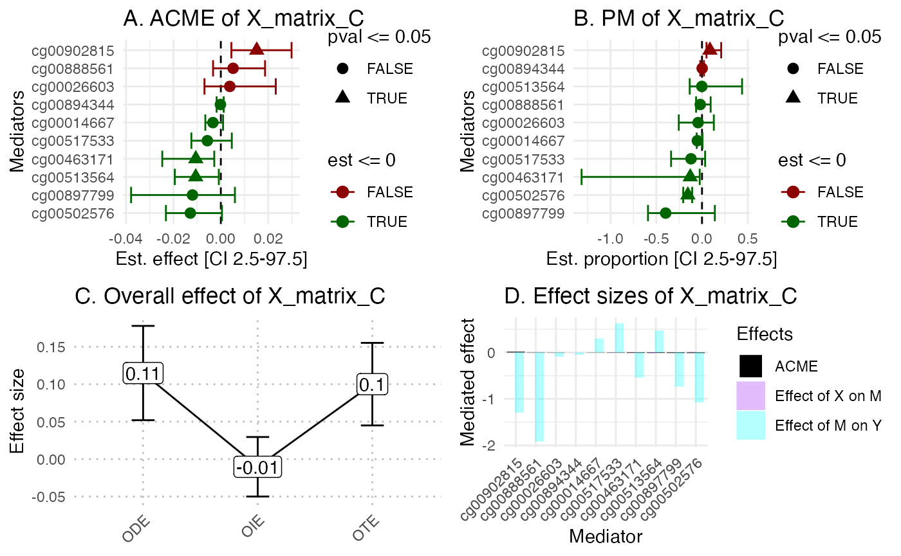
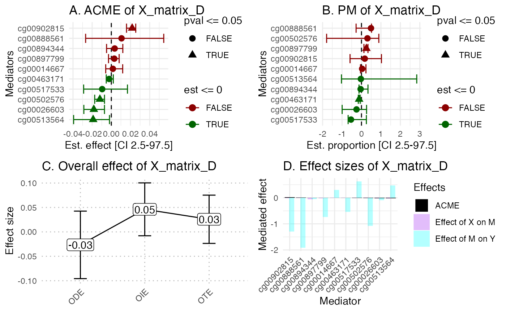

hdmax2_multivariate.RmdThe hdmax2 package is designed to accept exposure \(X\) consisting of univariate data, which can be continuous, binary, as well as multivariate exposomes (which includes categorical variables).
In this vignette, we treat the multivariate example, with a categorial explanatory variables
To install the latest version of hdmax2, use the github repository
#devtools::install_github("bcm-uga/hdmax2")We simulated 100 samples and 500 potential mediators, with various type of exposures (continuous or binary) and outcomes(continuous or binary).
simu_data = hdmax2::simu_data
## Exposures
X_matrix = simu_data$X_categorial
X_matrix = droplevels(X_matrix)
X_matrix = mltools::one_hot(data.table::as.data.table(X_matrix))
X_matrix = as.matrix(X_matrix)
## Outcomes
Y_matrix = as.matrix(simu_data$Y_continuous)
## High dimension mediators
M_matrix = as.matrix(simu_data$M)
## Covariates
age = as.matrix(simu_data$age)
gender = as.matrix(simu_data$gender)
## Number of Latent factore estimation
pc <- prcomp(M_matrix)
plot(pc$sdev[1:10],
xlab = 'Principal Component',
ylab = "Explained variance")
K=8 #pca conclusion : it is better to select too many factors that too fewThe run_AS function is applied to estimate the effects of exposuire \(X\) on a matrix \(M\) of potential mediators, and the effect of each potential mediators on outcome \(Y\). Covariables can be included.
X_type= "multivariate"
detailed = TRUE
Y_type = "continuous"
detailed = TRUE
covar = cbind(age, gender)
hdmax2_step1 = hdmax2::run_AS(X_matrix = X_matrix ,
Y_matrix = Y_matrix,
M_matrix = M_matrix,
K = K,
X_type = X_type, # indicates the type of Exposure
Y_type = Y_type, # indicates the type of Outcome
detailed = detailed, # indicates the exposure is multivariate
covar = covar)
#> [1] "All exposome columns are in numeric format."
#> [1] "Running first regression with multivariate explatory variables."
#> [1] "Generating detailed pvalues for each explanatory variable."
#> [1] "Running second regression."
#> [1] "Running max-squared test."
#> [1] "Generating max2 pvalues for each explanatory variable."
#
# # max2 test results
head(hdmax2_step1$max2_pvalues)
#> cg00005740 cg00006787 cg00007032 cg00008612 cg00009871 cg00009922
#> 0.9248846 0.9093581 0.1779910 0.1504423 0.9465306 0.2755099In this example, we will consider the 10 first selected mediators.
## Selecting top 10 mediators
mediators_top10 = M_matrix[,names(sort(hdmax2_step1$max2_pvalues)[1:10])]
head(mediators_top10)
#> cg00502576 cg00897799 cg00513564 cg00894344 cg00014667 cg00888561
#> GSM1051525 0.8844783 0.8750781 0.7201085 0.7622600 0.7992167 0.09309668
#> GSM1051526 0.8652441 0.8886705 0.7281696 0.8463778 0.8012565 0.10766164
#> GSM1051527 0.8910252 0.8661710 0.6729922 0.8287131 0.7892398 0.07369961
#> GSM1051528 0.8925080 0.9447288 0.6729783 0.8582649 0.8031898 0.09310408
#> GSM1051529 0.8895356 0.8864371 0.7004180 0.8189183 0.8005460 0.09569806
#> GSM1051530 0.9168653 0.8775554 0.7261984 0.7999206 0.8190546 0.06168537
#> cg00902815 cg00026603 cg00463171 cg00517533
#> GSM1051525 0.7656570 0.8165730 0.06501884 0.04819313
#> GSM1051526 0.7792483 0.8082611 0.04112654 0.05138718
#> GSM1051527 0.8183813 0.8564870 0.04985323 0.03966803
#> GSM1051528 0.7682291 0.8137468 0.05555453 0.03642506
#> GSM1051529 0.7522033 0.8141816 0.04814382 0.03857423
#> GSM1051530 0.7834045 0.8258677 0.04549460 0.03823312The function estimate_effect estimate the individual indirect effect of mediators.
object = hdmax2_step1
m = mediators_top10
hdmax2_step2 = hdmax2::estimate_effect(object = hdmax2_step1,
m = mediators_top10,
is.categorial = TRUE)
#> [1] "Estimating indirect effect for multivariate exposome."
#> [1] "A model is run to estimate indirect effect of the following explanatory variable: X_matrix_A"
#> [1] "One mode of the categorical variable is arbitrarily removed to avoid collinearity."
#> [1] "Computing ODE and OTE for continuous outcome."
#> [1] "A model is run to estimate indirect effect of the following explanatory variable: X_matrix_B"
#> [1] "One mode of the categorical variable is arbitrarily removed to avoid collinearity."
#> [1] "Computing ODE and OTE for continuous outcome."
#> [1] "A model is run to estimate indirect effect of the following explanatory variable: X_matrix_C"
#> [1] "One mode of the categorical variable is arbitrarily removed to avoid collinearity."
#> [1] "Computing ODE and OTE for continuous outcome."
#> [1] "A model is run to estimate indirect effect of the following explanatory variable: X_matrix_D"
#> [1] "One mode of the categorical variable is arbitrarily removed to avoid collinearity."
#> [1] "Computing ODE and OTE for continuous outcome."We propose a set of plots which include:
Forest plot of mediators ACME
Forest plot of mediators PM
Comparison of ODE, OIE and OTE
Mediators effect size representation
library(ggplot2)
hdmax2::plot_hdmax2(hdmax2_step2, N_med = 10)
#> [1] "hdmax2 plot for multivariate exposome"
sessionInfo()
#> R version 4.2.3 (2023-03-15)
#> Platform: aarch64-apple-darwin20.0.0 (64-bit)
#> Running under: macOS Monterey 12.2.1
#>
#> Matrix products: default
#> BLAS/LAPACK: /Users/richamag/miniconda3/envs/hdmax2/lib/libopenblas.0.dylib
#>
#> locale:
#> [1] fr_FR.UTF-8/fr_FR.UTF-8/fr_FR.UTF-8/C/fr_FR.UTF-8/fr_FR.UTF-8
#>
#> attached base packages:
#> [1] stats graphics grDevices utils datasets methods base
#>
#> other attached packages:
#> [1] ggplot2_3.5.0
#>
#> loaded via a namespace (and not attached):
#> [1] sass_0.4.8 jsonlite_1.8.8 splines_4.2.3 prettydoc_0.4.1
#> [5] bslib_0.6.1 mediation_4.5.0 Formula_1.2-5 highr_0.10
#> [9] yaml_2.3.8 pillar_1.9.0 backports_1.4.1 lattice_0.22-5
#> [13] glue_1.7.0 digest_0.6.34 checkmate_2.3.1 minqa_1.2.6
#> [17] colorspace_2.1-0 sandwich_3.1-0 hdmax2_0.0.0.9000 htmltools_0.5.7
#> [21] Matrix_1.6-5 lpSolve_5.6.20 pkgconfig_2.0.3 purrr_1.0.2
#> [25] mvtnorm_1.2-4 scales_1.3.0 lme4_1.1-35.1 htmlTable_2.4.2
#> [29] tibble_3.2.1 farver_2.1.1 generics_0.1.3 cachem_1.0.8
#> [33] withr_3.0.0 nnet_7.3-19 cli_3.6.2 magrittr_2.0.3
#> [37] memoise_2.0.1 evaluate_0.23 fs_1.6.3 fansi_1.0.6
#> [41] nlme_3.1-164 MASS_7.3-60.0.1 foreign_0.8-86 textshaping_0.3.7
#> [45] tools_4.2.3 data.table_1.15.2 lifecycle_1.0.4 stringr_1.5.1
#> [49] munsell_0.5.0 cluster_2.1.6 compiler_4.2.3 pkgdown_2.0.7
#> [53] jquerylib_0.1.4 systemfonts_1.0.5 rlang_1.1.3 grid_4.2.3
#> [57] nloptr_2.0.3 rstudioapi_0.15.0 htmlwidgets_1.6.4 mltools_0.3.5
#> [61] base64enc_0.1-3 labeling_0.4.3 rmarkdown_2.25 boot_1.3-28.1
#> [65] gtable_0.3.4 R6_2.5.1 gridExtra_2.3 zoo_1.8-12
#> [69] knitr_1.45 dplyr_1.1.4 fastmap_1.1.1 utf8_1.2.4
#> [73] Hmisc_5.1-1 ragg_1.2.7 desc_1.4.3 stringi_1.8.3
#> [77] Rcpp_1.0.12 vctrs_0.6.5 rpart_4.1.23 tidyselect_1.2.0
#> [81] xfun_0.42